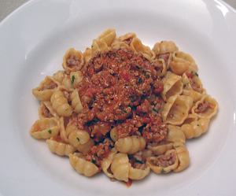

Penne al Salsiccia
5,5 von 6Eine Zwiebel, einige Knoblauchzehen und pro Person das Fleisch einer Salsiccia in Olivenöl andämpfen, Hitze reduzieren und ca. 15 Minuten köcheln lassen. Mit etwas Rotwein oder Congnac ablöschen, salzen und pfeffern. Wenig (ca. 1/2 bis 1 Dose) Pelatti dazugeben und das ganze einwenig einkochen. Mit einen Gutsch Rahm und flacher Petersilie verfeinern.
